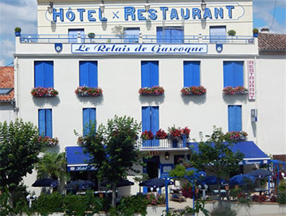
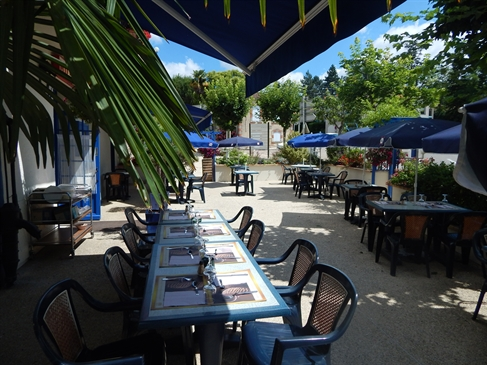
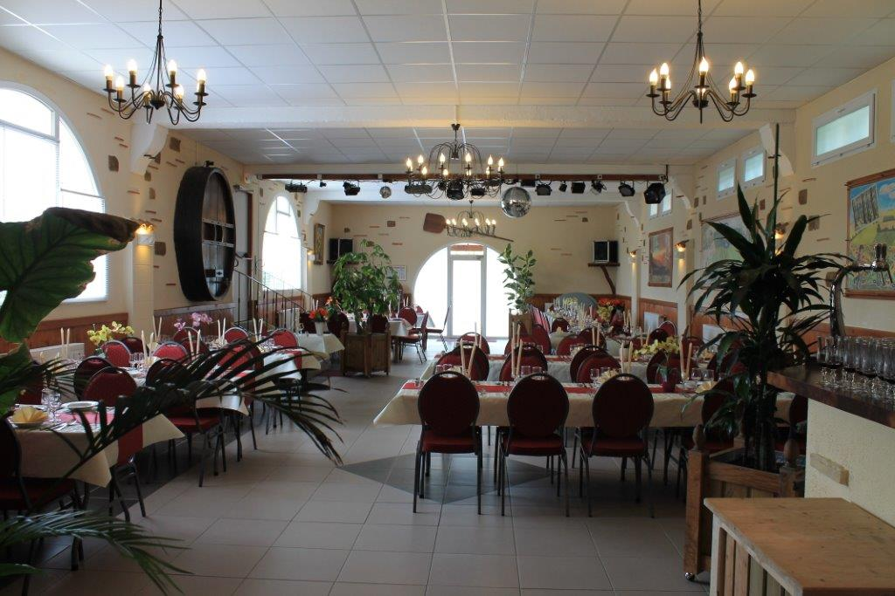
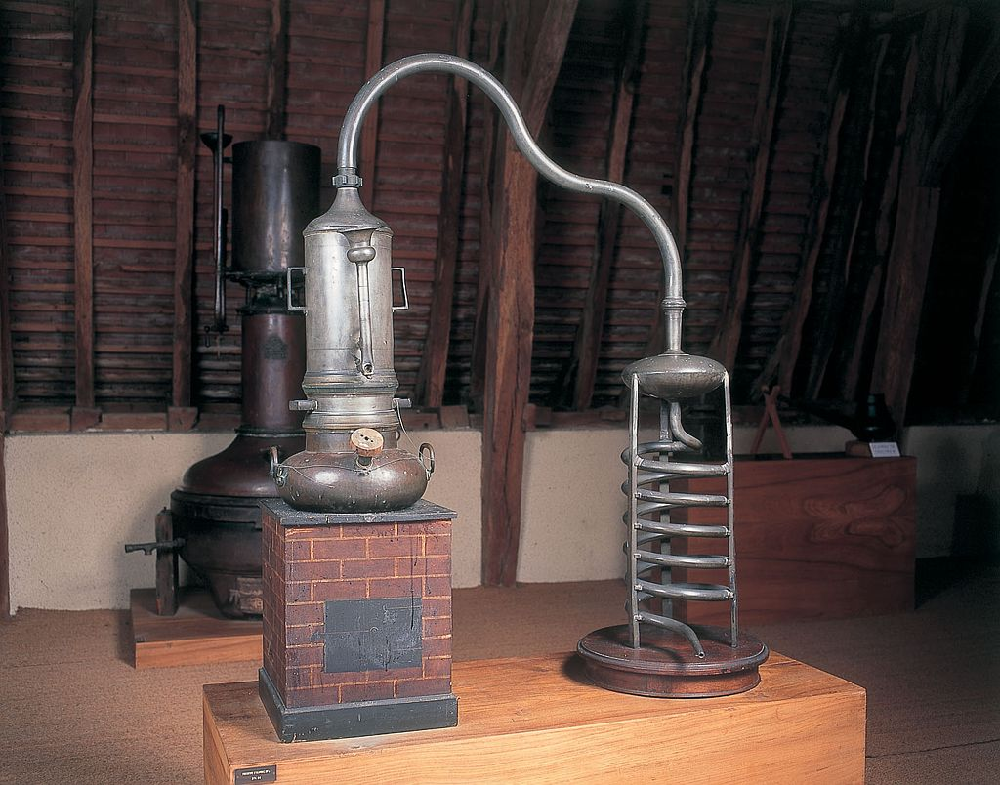
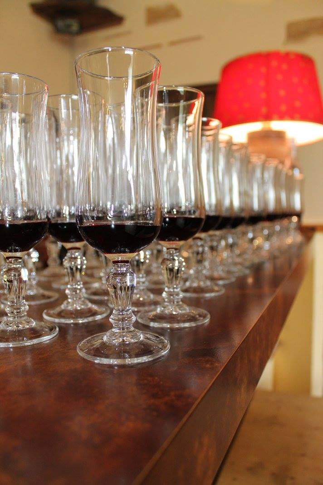
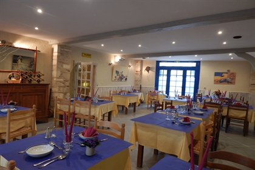
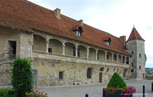
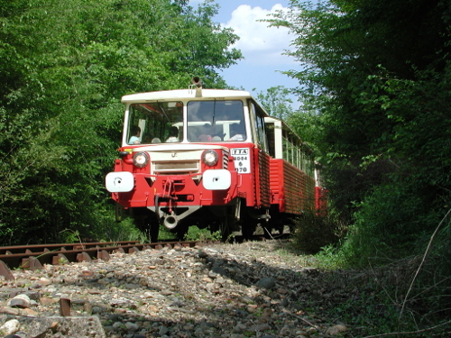
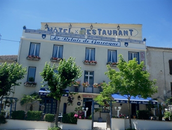

Premier écran de l'accueil (esquisse), palette en codes couleur et typographies. Les photos sont celles du site actuel, en petit : les grandes images seront créées avec Grok.
Hôtel · Restaurant · Mézin
Une table et des chambres au pays de l'Armagnac
17 chambres, une cuisine gasconne de saison et une salle de 120 places, à l'entrée de Mézin.
Réserver une table


A. Volets bleus Recommandée
Hôtel · Restaurant · Gascogne
La Gascogne se goûte à la lueur de l'Armagnac
Confit, magret, pruneaux et 17 chambres pour s'attarder. À l'entrée de Mézin.
Réserver une table


B. Ambre d'Armagnac
Relais d'étape · Mézin
Une étape gourmande au cœur de la Gascogne
Sur la RD 656, entre Nérac et le Gers : la table, le lit et toute la région autour.
Préparer son étape


C. Carnet d'étape